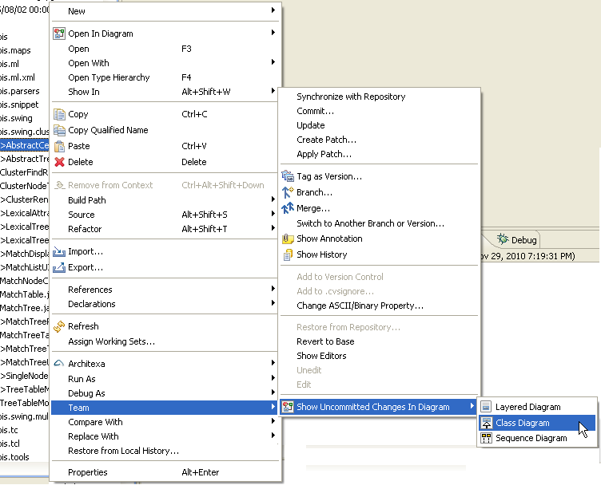
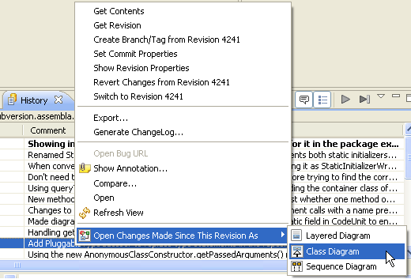

Have easier code reviews by understanding changes with diagrams
To facilitate code maintenance, developers need to control change and manage multiple versions of code. This is a challenge even for the most experienced developer, especially considering today's increasing iteration speed due to agile development. Architexa provides source repository integration with CVS and SVN to make code reviews faster, easier, and less painful. Use Architexa to:Instructions:
A. Architexa's core plugin provides integration with CVS repositories by default. To get SVN (Subclipse) support, use the extended client udpate site: http://update.architexa.com/client-extended
B. To view uncommitted changes:
Right click on a code element and go to the Team menu. Use the Architexa entry at the bottom of the Team menu to open a diagram of the uncommitted changes present in the selected element. The diagram will show how all the changes are related and connected.

C. To view changes since past revisions:
Open the Eclipse History view on an element. (Right click the element -> Team -> Show History). Select one of the revisions in the list. Open a diagram of differences between the selected revision and the current workspace version either by using the Architexa pulldown in the History view toolbar or by right clicking on the revision and using the Architexa entry in the context menu.

---- Your question not answered? Send an email to support@architexa.com ----